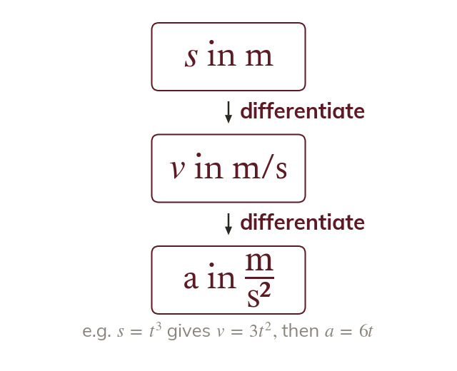
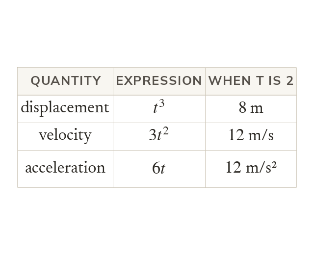
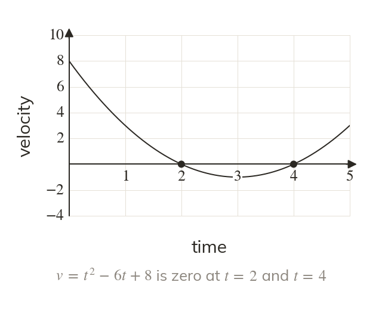
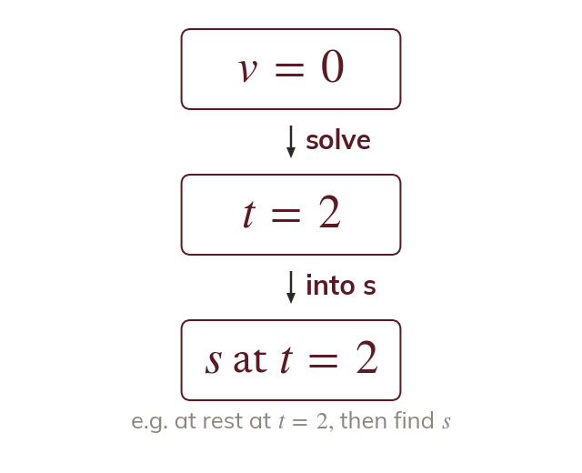

Each rate is a derivative
Velocity is the rate of change of displacement: . Acceleration is the rate of change of velocity: .
Velocity is the rate of change of displacement, so . Acceleration is the rate of change of velocity, so .
Engineers and physicists describe motion with a formula for position over time. Differentiating it once gives the velocity and twice gives the acceleration, at any instant they choose.
Work down the page at your own pace. Write every answer in your book first, then click to check it.
Read each card, then follow the worked examples one step at a time.

Velocity is the rate of change of displacement: . Acceleration is the rate of change of velocity: .

Velocity at a time puts t into v, not s. The units go m, then m/s, then m/s²
Pick an answer. If it's wrong, the feedback tells you which mistake it was.
Read each card, then follow the worked examples one step at a time.

At rest means the velocity is zero. So is solved for t, keeping sensible times.

The time found goes into s for the position. Put into a, it gives the acceleration there.
Pick an answer. If it's wrong, the feedback tells you which mistake it was.
Finished? Next lesson: 11H.8.1 Vector Notation and Magnitude.
For each skill, tap the one that is true for you today. Your Revise pages start with anything you mark Not yet.
Your ratings are saved on this device only.
Log in, then search for a code to practise that skill.
Videos, worksheets and more on each part of this lesson.